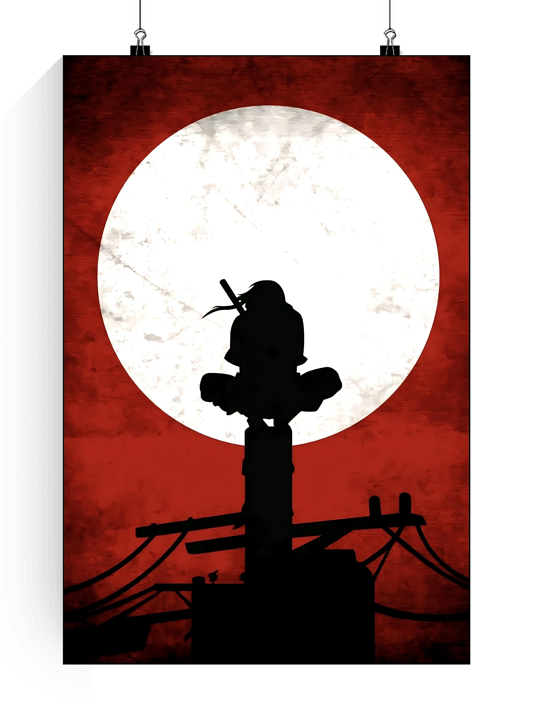

It is a free photo and video sharing app available on iPhone and Android. People can upload photos or videos to our service and share them with their followers or with a select group of friends. They can also view, comment and like posts shared by their friends on Instagram. It is a free photo and video sharing app available on iPhone and Android. People can upload photos or videos to our service and share them with their followers or with a select group of friends. They can also view, comment and like posts shared by their friends on Instagram.. It is a free photo and video sharing app available on iPhone and Android. People can upload photos or videos to our service and share them with their followers or with a select group of friends. They can also view, comment and like posts shared by their friends on Instagram.. It is a free photo and video sharing app available on iPhone and Android. People can upload photos or videos to our service and share them with their followers or with a select group of friends. They can also view, comment and like posts shared by their friends on Instagram. It is a free photo and video sharing app available on iPhone and Android. People can upload photos or videos to our service and share them with their followers or with a select group of friends. They can also view, comment and like posts shared by their friends on Instagram. It is a free photo and video sharing app available on iPhone and Android. People can upload photos or videos to our service and share them with their followers or with a select group of friends. They can also view, comment and like posts shared by their friends on Instagram.
LinkedIn
It is a business and employment-focused social media platform that works through websites and mobile apps. It was launched on May 5, 2003 by Reid Hoffman and Eric Ly. Since December 2016, LinkedIn has been a wholly owned subsidiary of Microsoft. It is a business and employment-focused social media platform that works through websites and mobile apps. It was launched on May 5, 2003 by Reid Hoffman and Eric Ly. Since December 2016, LinkedIn has been a wholly owned subsidiary of Microsoft. It is a business and employment-focused social media platform that works through websites and mobile apps. It was launched on May 5, 2003 by Reid Hoffman and Eric Ly. Since December 2016, LinkedIn has been a wholly owned subsidiary of Microsoft. It is a business and employment-focused social media platform that works through websites and mobile apps. It was launched on May 5, 2003 by Reid Hoffman and Eric Ly. Since December 2016, LinkedIn has been a wholly owned subsidiary of Microsoft. It is a business and employment-focused social media platform that works through websites and mobile apps. It was launched on May 5, 2003 by Reid Hoffman and Eric Ly. Since December 2016, LinkedIn has been a wholly owned subsidiary of Microsoft
Itachi

Itachi Uchiha is a character in the Naruto manga and anime series created by Masashi Kishimoto. Itachi is the older brother of Sasuke Uchiha, and is responsible for killing all the elder members of their clan, sparing only Sasuke. Itachi Uchiha is a character in the Naruto manga and anime series created by Masashi Kishimoto. Itachi is the older brother of Sasuke Uchiha, and is responsible for killing all the elder members of their clan, sparing only Sasuke. Itachi Uchiha is a character in the Naruto manga and anime series created by Masashi Kishimoto. Itachi is the older brother of Sasuke Uchiha, and is responsible for killing all the elder members of their clan, sparing only Sasuke. Itachi Uchiha is a character in the Naruto manga and anime series created by Masashi Kishimoto. Itachi is the older brother of Sasuke Uchiha, and is responsible for killing all the elder members of their clan, sparing only Sasuke. Itachi Uchiha is a character in the Naruto manga and anime series created by Masashi Kishimoto. Itachi is the older brother of Sasuke Uchiha, and is responsible for killing all the elder members of their clan, sparing only Sasuke